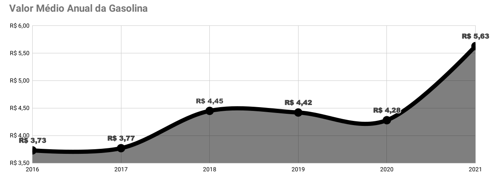

Entre os dados analisados, estão os preços da gasolina e o preço médio dos automóveis, correlativos com o poder de compra relativo ao salário mínimo e a gasolina entre os anos de 2016 a 2021. É fato que com a chegada inesperada da pandemia vários setores sofreram em vários aspectos, principalmente no tocante econômico. Diversas áreas foram prejudicadas, como por exemplo: alimentícia, vestuário, equipamentos eletrônicos, automotivo, entre outras. A inflação é um, senão o principal fator responsável pela expansão dos preços. Isso deve-se basicamente a três princípios: Causa monetária, onde o governo imprime mais dinheiro do que o necessário, ou seja, quanto mais dinheiro em circulação menor o poder de compra, logo, a desvalorização da moeda. Ajustes de preços equivocados num determinado setor tentando prever que outros do mesmo setor também irão reajustar. E por fim, lei da oferta e demanda.
Segundo o Ministério da Economia, o setor automotivo foi severamente afetado, ocupando duas posições entre as 10 atividades econômicas mais afetadas durante a pandemia. A lista foi elaborada com base na variação do faturamento do setor, segundo dados da Receita Federal. Também foi considerada a relevância do setor na economia, tanto por valor agregado (VA), quanto por pessoal ocupado (PO).
Disponível em : https://www.gov.br/economia/pt-br/assuntos/noticias/2020/setembro/ministerio-da-economia-divulga-lista-dos-setores-mais-afetados-pela-pandemia-da-covid-19-no-brasil
Com o impacto da pandemia do Covid-19 no campo da indústria automotora, esse crescimento árduo se destaca principalmente pela falta de componentes para construção de peças automotivas. A variação nos preços de carros usados oscilaram excessivamente comparados aos carros novos, como pode-se observar no gráfico abaixo.
Dentre os modelos analisados, considerando o Volkswagen Gol 1.0 2016 zero Km, na época seu valor em média era de R$32.390,00. Hoje esse mesmo veículo, usado ano 2016, seu preço estimado está chegando a custar R$33.000,00. Analisando este mesmo carro em 2019, antes da pandemia custava R$27.406,00 Reais, obtendo uma diferença de 22,22% comparado com o mesmo modelo de 2016 em 2021.
Contudo, se não bastasse o aumento dos veículos em geral, a inflação no custo da gasolina trouxe bastante instabilidade na vida das pessoas. Segundo a Petrobras, o valor do combustível derivado de petróleo e seus commodities no Brasil, têm seus preços atrelados ao mercado internacional se baseando na oferta e demanda mundial.
Com o início da pandemia no Brasil, por incrível que pareça, no ano de 2020 a média anual do valor do combustível ficou em R$4,28, com uma baixa na média de -3,16%, comparado com o ano anterior. Como consequência da flutuação dos preços no mercado internacional, crise política e econômica no Brasil, em 2021 o custo da gasolina no bico da bomba está fechando em média R$5.63 até o momento, com um aumento de 27,37% relacionado ao ano anterior.
Analisando o poder de compra entre o salário mínimo e o valor da gasolina, como pode ser observado no gráfico abaixo, em 2016 era possível comprar mais de 235 litros de gasolina, atualmente essa marca é limitada em aproximadamente 195 litros.
Levando em consideração todos os fatores negativos que a pandemia ofereceu, obteve uma redução do poder de compra de quase 10% se comparado ao ano pré-pandemia. É importante ressaltar que a representatividade média de um litro de gasolina x salário mínimo, antes e durante o pico pandêmico (2021) chega à margem dos 26,51%.
© 2021 No copy mané. All rights reserved.